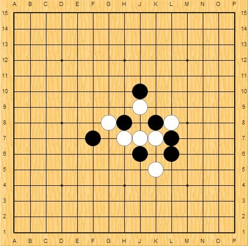
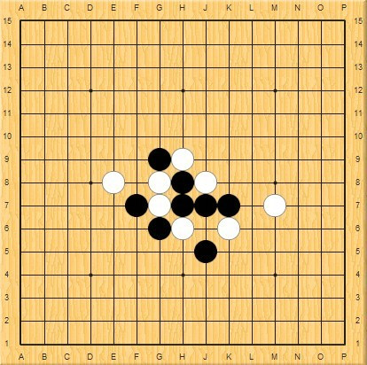
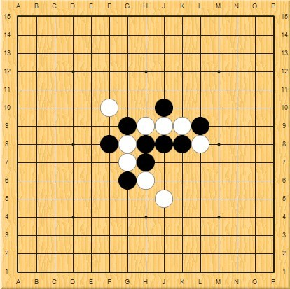

迎五一有奖答题
#1 迎五一有奖答题 作者：浩瀚铭剑 发表时间：2010-4-25 12:35:54
为了迎接五一的到来 浩瀚棋社将举办迎五一有奖答题活动。给所有五子棋爱好者一次答题有奖活动 欢迎大家的参与
主办方：浩瀚棋社
活动负责：浩瀚铭剑
活动时间：时间为2010年4月25日到2010年5月8日
活动形式：以发帖出题的方式。由浩瀚铭剑在爱五子网浩瀚棋社板块上发帖出题（如下）给与二周的答题时间。
解答要求：1、答案以lib棋谱格式保存成文件后随解答贴上传为附件。寄到haohanqishe@126.com邮箱。（爱五子棋用户可以直接更贴不用发送到邮箱里面）
2、请答题者尽量完整解答，这也是评判的标准。推荐用“连珠终结者”软件制作的地毯谱或爱五子棋打谱软件制作的解答谱。
3、跟帖不能讨论，以参加者的第一次回帖答案为准。正解答案时间先后、解答完整度予以评判。
活动奖励：
1、第一名答对三题者奖励威望2 QQ会员三个月（一名）
2、第二名答对三题题者奖励威望2 QQ会员二个月（一名）
3、凡参加解答者，活动结束后将抽取一名幸运奖，奖励威望2 QQ会员一个月（一名）
注意事项：
活动解释权归浩瀚棋社。



题目要求：这三道题黑如何胜
［ 逆刃 于 2010-4-25 23:27:41 时奖励此帖[金币加 20 威望加1］
#2 Re:迎五一有奖答题 作者：冷酒一杯 发表时间：2010-4-28 11:05:47
似乎第一题恒星变化、后两个松月3打变化。难哉。
#3 Re:迎五一有奖答题 作者：逆刃 发表时间：2010-4-28 12:06:18
题目现在有人解出来了吗？#4 Re:迎五一有奖答题 作者：心上人 发表时间：2010-4-28 13:08:53
正在积极思考，第三局好难啊#5 Re:迎五一有奖答题 作者：也也 发表时间：2010-4-28 23:32:06
黑石 就能算出来。。。#6 Re:Re:迎五一有奖答题 作者：浩瀚铭剑 发表时间：2010-4-28 23:45:42
引用：那你把它算出来呗 呵呵
原文由 也也 发表于 2010-4-28 23:32:06 :
黑石 就能算出来。。。
 公布哈你算出来的答案
公布哈你算出来的答案
#7 Re:迎五一有奖答题 作者：五子痴 发表时间：2010-5-2 0:00:49
图1的变化15之后黑胜定，白毫无还手之力
=======上图对应的爱五子棋谱代码如下，以便你拆解：========
h8h7i6i7j8j7k7i9i10g8f7k8k6j5f9
======================================================
第2图的两路最强变化
=======上图对应的爱五子棋谱代码如下，以便你拆解：========
h8h9h7h6j7g8f7g7g6e8g9i8i7j6i5l7f5g5e4d3f4f6g4h4i3i4d8e6d6
======================================================
=======上图对应的爱五子棋谱代码如下，以便你拆解：========
h8h9h7h6j7g8f7g7g6e8g9i8i7j6i5l7f5g4e4d3e5f4g5h5e7
======================================================
第3图的变化 列举个最难杀的24变化
=======上图对应的爱五子棋谱代码如下，以便你拆解：========
h8h9h7h6j8g7i8g8g6j9i10i9g9f10f8k8k9i5e7d6i11h10k11j11k12k10h12j10i12j12j13i14k14
======================================================
回帖纯属娱乐 ，如能指出不足之处，不胜感激。
如果侥幸答对，也无需奖品，闲散之人要奖无用，拆棋的过程已经是最好的奖品。
［ 茗弈小刀 于 2010-5-2 20:45:46 时奖励此帖[金币加 20 威望加1］
#8 Re:迎五一有奖答题 作者：浩瀚铭剑 发表时间：2010-5-2 10:32:12
五子痴你好，感谢你积极参加答题活动。但是你的答题不符合解答的三点要求。
此题上面说明很清楚不可以讨论，答案要附件形式，最好地毯谱或爱五子棋打谱软件制作的解答谱。按照解题要求来判定，五子痴朋友的回答不符合要求。请你由以上要求解答。谢谢合作
［此帖子已被 浩瀚铭剑 在 2010-5-2 10:56:13 编辑过］
#9 Re:迎五一有奖答题 作者：五子痴 发表时间：2010-5-2 11:07:44
我对奖品没有兴趣，我是奔这个变化来得。
我选的是我觉得很关键的点，走到之后，后面顺风顺水，有点功力的人都可以轻松地毯。
其实我不提倡地毯的形式，那样五子棋就缺少太多乐趣，点到为止最好啦。
#10 Re:迎五一有奖答题 作者：杨文浩 发表时间：2010-5-2 23:17:18
哇,五子痴老师,我爱你,我太认同你的看法了,我也是最不喜欢地毯这东西.而且我绝得你好强,看过题目后还能复原顺序,可见对所有开局定式都有颇深的研究.遗憾的是,你在这儿把答案发出来,关键的不是你得不到奖的问题,而是别人辛苦策划的活动办不下去了.所以还是劝你给人家道声歉.#11 Re:迎五一有奖答题 作者：五子痴 发表时间：2010-5-3 1:09:42
这是我答题的方式，如果觉得不合适，我也没有办法。
那就等别人的馅饼吧。
#12 Re:迎五一有奖答题 作者：安娜制作所 发表时间：2010-7-8 12:45:54
师伯,这几题怎么没人公布地毯啊?#13 Re:迎五一有奖答题 作者：岑小鱼 发表时间：2010-7-10 18:52:55
太难 我也等馅饼#14 Re:迎五一有奖答题 作者：月斜星疏 发表时间：2010-7-10 19:31:11
围观等饼。